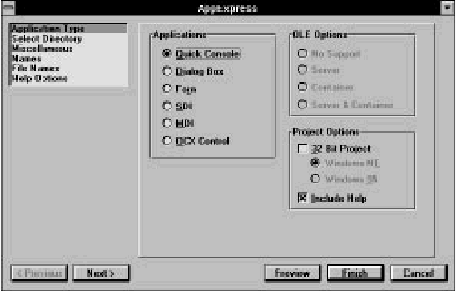
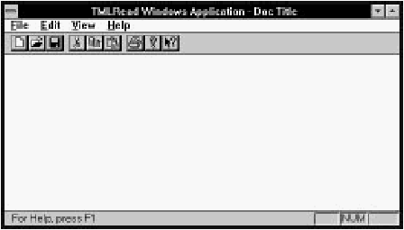
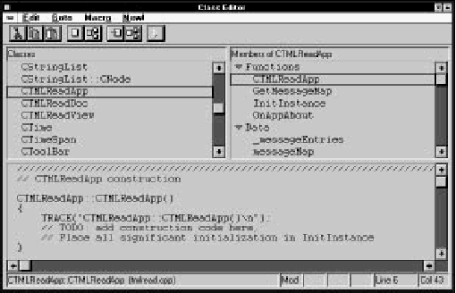
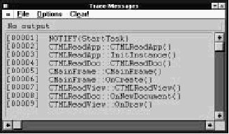

Home
| Search
| CTG
| RTL
| IDDE
| STL
Home
| Search
| CTG
| RTL
| IDDE
| STL
Last update Fri Apr 28 16:30:17 2006
|
Reference 1. Introducing Digital Mars C++ 2. Introducing the IDDE Part 2: Creating an Application with Digital Mars C++ 3. Starting a Project and Defining Workspaces 4. Generating an Application Framework 5. Defining Classes and Their Hierarchies 6. Editing Program Code 7. Adding Look and Feel with Resources 8. Testing an Application Part 3: Learning Digital Mars C++ by Example 9. Introduction to the Tutorial 10. Lesson 1: Create the DOS Application 11. Lesson 2: Generate an Application Framework 12. Lesson 3: Customize the Interface 13. Lesson 4: Add Messages with ClassExpress 14. Lesson 5: Add a Dialog Box with ClassExpress Part 4: More about Creating Programs 15. More about Projects and Workspaces 16. More about Project Build Settings 17. More about AppExpress 18. More about ClassExpress 19. Class Editor Reference 20. Hierarchy Editor Reference 21. Text Editor Reference 22. Using Version Control Part 5: More about Testing Programs 23. Controlling and Configuring the Debugger 24. Commands Available in Debugging Mode Part 6: About Managing Resources 25. ResourceStudio Resource Editor 26. Dialog Editor 27. Menu, Accelerator and String Table Editors 28. Bitmap, Cursor, Icon, and Font Editors 29. Version Information and Custom Resource Editors Part 7: Appendixes A. Expression Evaluation B. IDDE Settings and Command-Line Options C. Using NetBuild |
11. Lesson 2: Generate an Application FrameworkIn this chapter you begin the process of building a Windows version of the TML Reader. This version is built around a Microsoft Foundation Class (MFC) version 2.5 Single Document Interface (SDI) framework. In this lesson you:
There are many ways to create an application framework. This lesson provides the most straightforward way. Generating the FrameworkIn this lesson you use AppExpress to generate a new project containing an application framework. To start AppExpress:
 [Figure 11-1 Setting up an SDI application with AppExpress] AppExpress contains six pages of options that together define the project to be generated. You define these options in six steps, listed in the upper-left portion of the window. For this project, you need to change options on only four of the six pages. Set up the project options as follows:
Building and Running the New ProjectNext you build the project and learn what the default application framework can do.
 [Figure 11-2 New application framework generated by AppExpress] At present, default functionality for several menu commands is provided by the MFC base classes. For example, if you choose Open from the File menu, a standard Windows File Open dialog box opens. You can select a file in this dialog box, but the code needed to read data from the file is not yet installed. To close TMLRead and return to the IDDE, choose Exit from the File menu. The project can take a considerable amount of time to compile. Next you learn how to decrease compilation time by using precompiled headers. Using Precompiled HeadersIn the last section, over 70,000 lines of code were read during compilation. Many of these lines are in Windows and MFC header files that are changed infrequently (if ever), but still must be included by almost every source file. To speed compilation, you can precompile header files; thereafter, the symbols generated by the compiler can be loaded directly.To precompile the Windows and MFC header files:
Now that you have created, compiled, and executed the application framework, the rest of the chapter helps you to understand the framework's structure. The following three sections are optional. Adding TRACE Calls with Class EditorIn the remainder of this chapter, you investigate calls to member functions of the MFC-derived classes created by AppExpress to understand the structure of the application framework and the relationships between the classes. To do this, you use the Class Editor to insert calls to the MFC global TRACE macro into the member functions, then watch the output in the Trace Messages window.To add a TRACE call to the application class's constructor:
 [Figure 11-4 Adding TRACE calls with Class Editor] You can add similar TRACE calls to these other member functions:
In the next section you execute the application and watch the TRACE output in the Trace Messages window. Watching TRACE Output in the Trace Messages WindowTo watch TRACE output, first you must set up the Trace Messages window to receive and display TRACE messages.
When you close TMLRead, the Trace Messages window receives messages from the application's class destructors.  [Figure 11-5 TRACE output in the Trace Messages window] The next section gives an overview of the classes in the application framework and explains the messages you see in the Trace Messages window. The Application Framework and MFC ClassesIn this chapter, you have used AppExpress to build an application framework, a skeleton on which you can build a Windows application, consisting of C++ classes contained in and derived from classes in the Microsoft Foundation Class (MFC) library.The MFC library is a C++ class library that supports programming for Windows. It encapsulates most of the Windows Application Programming Interface (API), and provides additional C++ programming support such as container and string classes. The MFC library makes it easy to work with Windows elements in an object-oriented manner. For example, MFC library classes exist to represent objects such as windows, dialog boxes, controls, device contexts, Graphic Device Interface (GDI) objects, and so on. Windows API functions are implemented as member functions of the classes with which they are logically associated. TMLRead is built on a Single Document Interface (SDI) framework. The SDI framework contains five fundamental objects:
The TRACE output from the previous section lets you see the creation, use, and destruction of objects in the application. For example, when you start the application, you see the following messages: [00001] NOTIFY(StartTask) [00002] CTMLReadApp::CTMLReadApp() [00003] CTMLReadApp::InitInstance() [00004] CTMLReadDoc::CTMLReadDoc() [00005] CMainFrame::CMainFrame() [00006] CMainFrame::OnCreate() [00007] CTMLReadView::CTMLReadView() [00008] CTMLReadDoc::OnNewDocument() [00009] CTMLReadView::OnDraw()The application object is created first. Using a document template, the application object creates the document, frame window, and view objects. It then calls the document object to set up a new document. Finally, when the window is shown, the framework calls the view's OnDraw() function to repaint the window. If you choose New from TMLRead's File menu, you see the following messages: [00010] CTMLReadDoc::OnNewDocument() [00011] CTMLReadView::OnDraw()Or, if you choose Open from the File menu, then select a file, you see: [00012] CTMLReadDoc::Serialize() [00013] CTMLReadView::OnDraw()The document object is called either to create a new document or to read a document from a file, depending on the menu item that was chosen. Note that neither the document object nor the view object is destroyed; in an SDI application, they are reused continually. When you choose Exit from TMLRead's File menu, the application's objects are destroyed in reverse order in which they were created. You see these messages in the Trace Messages window: [00014] CTMLReadView::~CTMLReadView() [00015] CMainFrame::~CMainFrame() [00016] CTMLReadDoc::~CTMLReadDoc() [00017] NOTIFY(ExitTask) [00018] NOTIFY(DelModule)There is no message from the application object's destructor, because it is not defined explicitly in the framework. You may find it useful to continue to add TRACE calls to the application as it is built. It is often difficult to follow the workings of a message-driven system; the Trace Messages window, however, acts as a kind of passive debugger that keeps you informed of the internal workings of your application.
In the next chapter, you begin to shape the application framework to
the specific needs of the application. The first step in this process is
to customize the user interface with the Resource Editor.
|